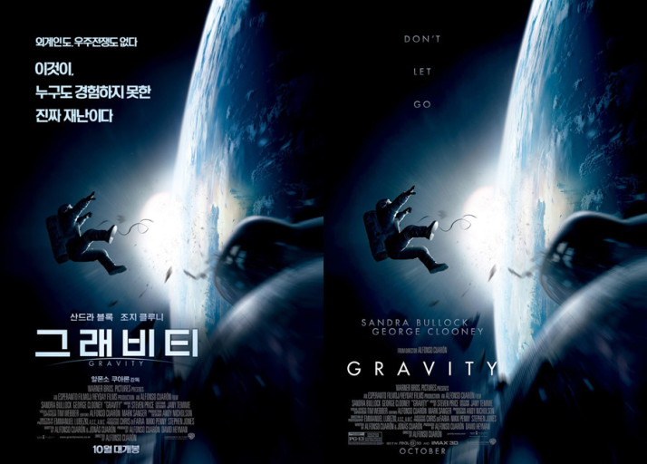

Gravity

概况
这部电影是以前上高中时科学老师放过的电影
我看了这部电影后深深感受到了宇宙的宏大以及可怕。
这部电影不仅在科学上严谨，而且情节充满紧张刺激感。
简介
离地球372英里，美丽而令人惊奇的宇宙空间。
但是，如果一个人留在那个地方呢？
为了修理哈勃太空望远镜，正在探索宇宙的瑞恩•斯通博士（桑德拉•布洛克）和同事马特•科瓦尔斯基（乔治•克鲁尼）
与在宇宙中漂浮的人造卫星残骸相撞,连接斯通博士和宇宙飞船的机器人手臂就会骨折
卷入凯斯勒综合症，成为宇宙迷路儿童独自留下的今天，斯通博士能否重返地球？